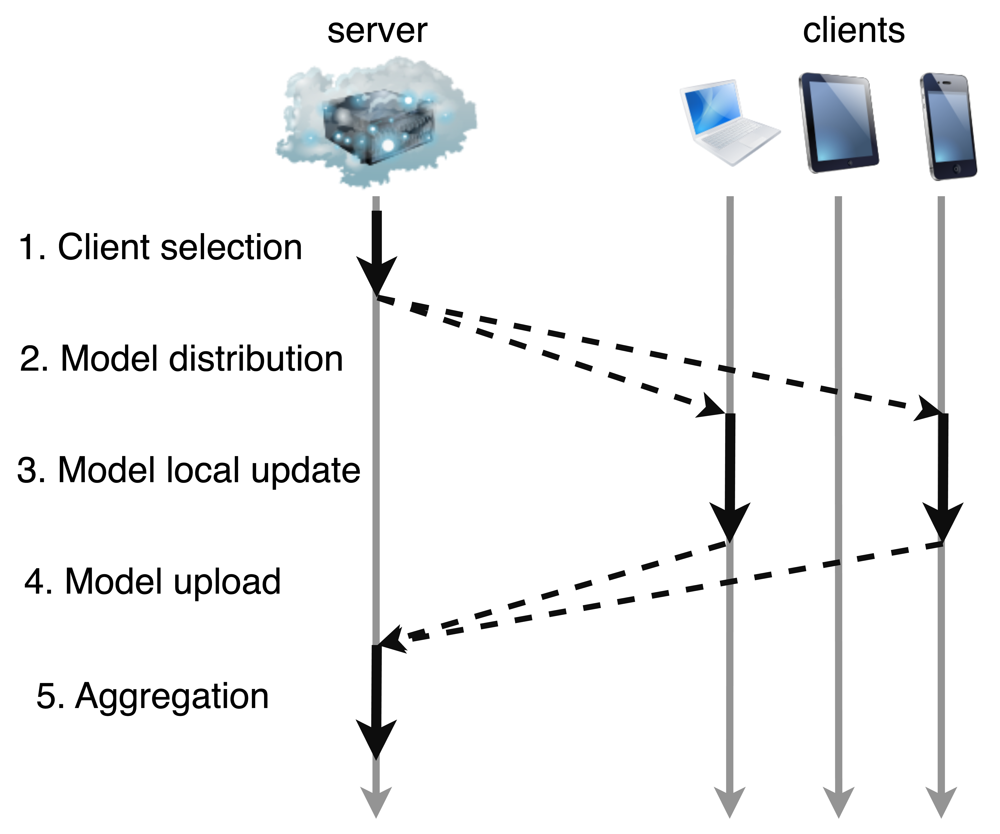

On Progress - Innovative Benchmark and Plug-and-Play Frame Selection Method for Long-Video Question Answering
Dan Ben Ami, Gabrielle Serrusi, Kobi Cohen, Chaim Baskin
In preparation, 2025
We are developing a novel Video Question Answering (VideoQA) benchmark. Alongside, we are designing a plug-and-play frame selection module that can integrate into existing VideoQA models to improve efficiency and accuracy by dynamically selecting the most relevant frames during inference.
A Stable Polygamy Approach to Spectrum Access with Channel Reuse
Dan Ben Ami, Kobi Cohen
Under review, IEEE Transactions on Communications (TCOM), 2024
I introduced the "Stable Polygamy Problem" (SPP) for spectrum access with channel reuse, developed efficient algorithms including RP&R, and proved their performance in specific interference regimes with strong simulation results.
Client Selection for Generalization in Accelerated Federated Learning: A Multi-Armed Bandit Approach
Dan Ben Ami, Kobi Cohen, Qing Zhao
IEEE Access, 2025
I developed a multi-armed bandit–based algorithm (BSFL) for federated learning that balances training latency and model generalization, achieving logarithmic regret and outperforming prior methods on synthetic and real datasets.

A Universal System for Boosting Gene Expression in Eukaryotic Cell-Lines
Inbal Vaknin, Or Willinger, Jonathan Mandl, Hadar Heuberger, Dan Ben-Ami, Yi Zeng, Sarah Goldberg, Yaron Orenstein, Roee Amit
Nature Communications, 2024
Designed and trained deep learning models to predict protein expression from DNA sequences, guiding motif selection for cross-species promoter boosting.
Characterizing Regulatory Grammar Rules in S. cerevisiae Using a Library of Conserved and Unknown Motifs
Inbal Vaknin, Hadar Heuberger, Dan Ben-Ami, Or Wilinger, Yi Zeng, Leon Anavy, Zohar Yakhini, Sarah Goldberg, Yaron Orenstein, Roee Amit
Cerevisiae, 2023
Developed convolutional neural network models to predict gene expression from DNA sequences, enabling validation of conserved transcriptional grammar rules.